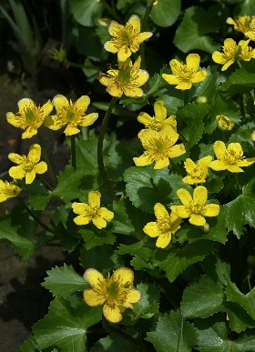

リュウキンカ
基本データ
- 日本名：りゅうきんか（立金花）
- 科目 ：キンポウゲ科
- 学名 ：Caltha palustris var. nipponica
| 生息地 | 路傍や畑の畦道 | |
| 大きさ | 5～15cm | |
| 花の咲く時期 | 2～6月 | |
| 花の色 | 黄色 | |
| 花びらの枚数・形 | 5枚 |
花びらのように見えるのはガク片で、花びらはない。本州の東北地方より北に生育する エゾノリュウキンカは、これより大形。ヨーロッパ、シベリア原産の ヒメリュウキンカは、日本には園芸用として渡来

| 生息地 | 路傍や畑の畦道 | |
| 大きさ | 5～15cm | |
| 花の咲く時期 | 2～6月 | |
| 花の色 | 黄色 | |
| 花びらの枚数・形 | 5枚 |